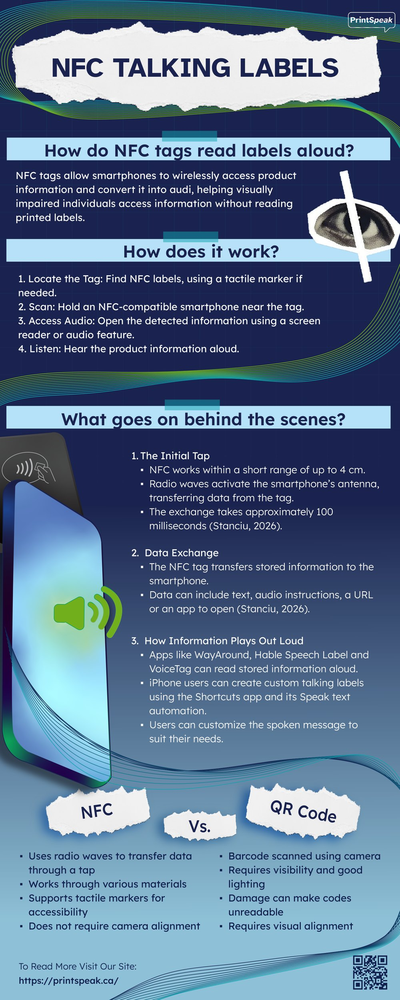

NFC Talking Labels: How Do NFC Tags Read Labels Aloud?
NFC tags allow smartphones to wirelessly access product information and convert it into audio, helping visually impaired individuals access information without reading printed labels. Our Creative team summed it up in one page. Everything it covers is also written out as text on this page.
By the PrintSpeak Creative Team

(opens full size in a new tab)
Infographic by the PrintSpeak Creative team. Select it to open full size.
How does it work?
Locate the tag: Find NFC labels, using a tactile marker if needed.Scan: Hold an NFC-compatible smartphone near the tag.Access audio: Open the detected information using a screen reader or audio feature.Listen: Hear the product information aloud.
What goes on behind the scenes?
1. The initial tap
NFC works within a short range of up to 4 cm.
Radio waves activate the smartphone’s antenna, transferring data from the tag.
The exchange takes approximately 100 milliseconds (Stanciu, 2026).
2. Data exchange
The NFC tag transfers stored information to the smartphone.
Data can include text, audio instructions, a URL or an app to open (Stanciu, 2026).
3. How information plays out loud
Apps like WayAround, Hable Speech Label and VoiceTag can read stored information aloud.
iPhone users can create custom talking labels using the Shortcuts app and its Speak Text automation.
Users can customize the spoken message to suit their needs.
NFC vs. QR codes
NFC
Uses radio waves to transfer data through a tap
Works through various materials
Supports tactile markers for accessibility
Does not require camera alignment
QR code
Barcode scanned using camera
Requires visibility and good lighting
Damage can make codes unreadable
Requires visual alignment
References
Stanciu. (2026).
Learn more
What Are Talking Labels? →
Questions about talking labels, or want to work with us? Get in touch .